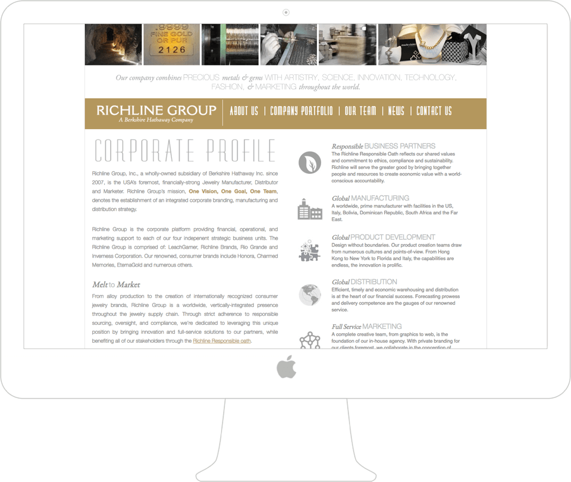
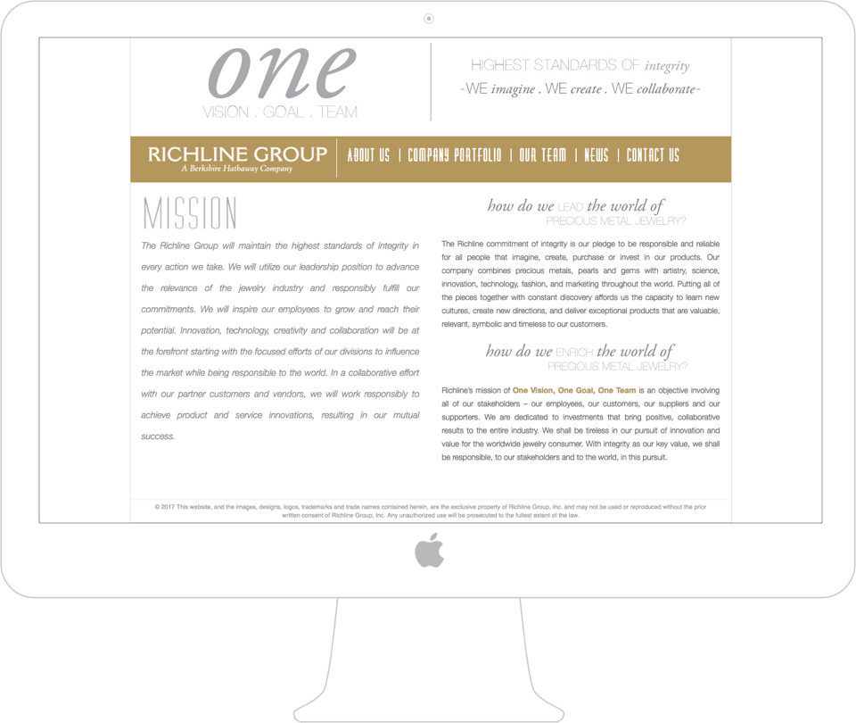
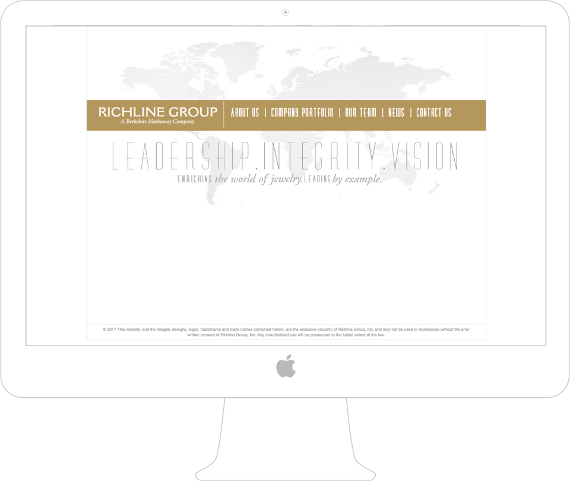
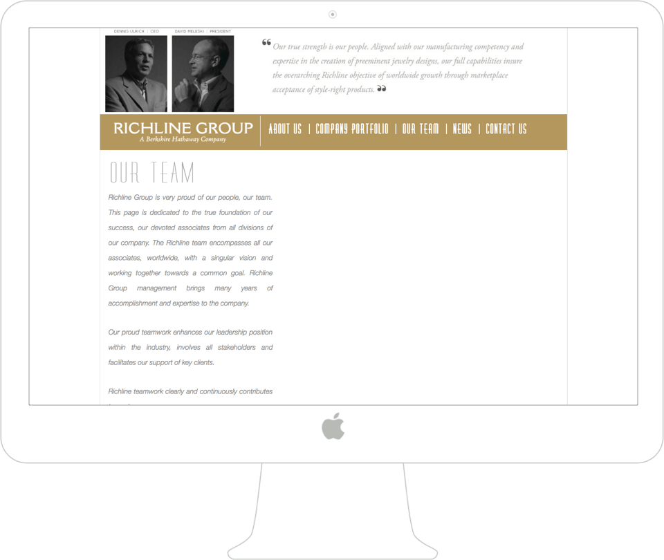
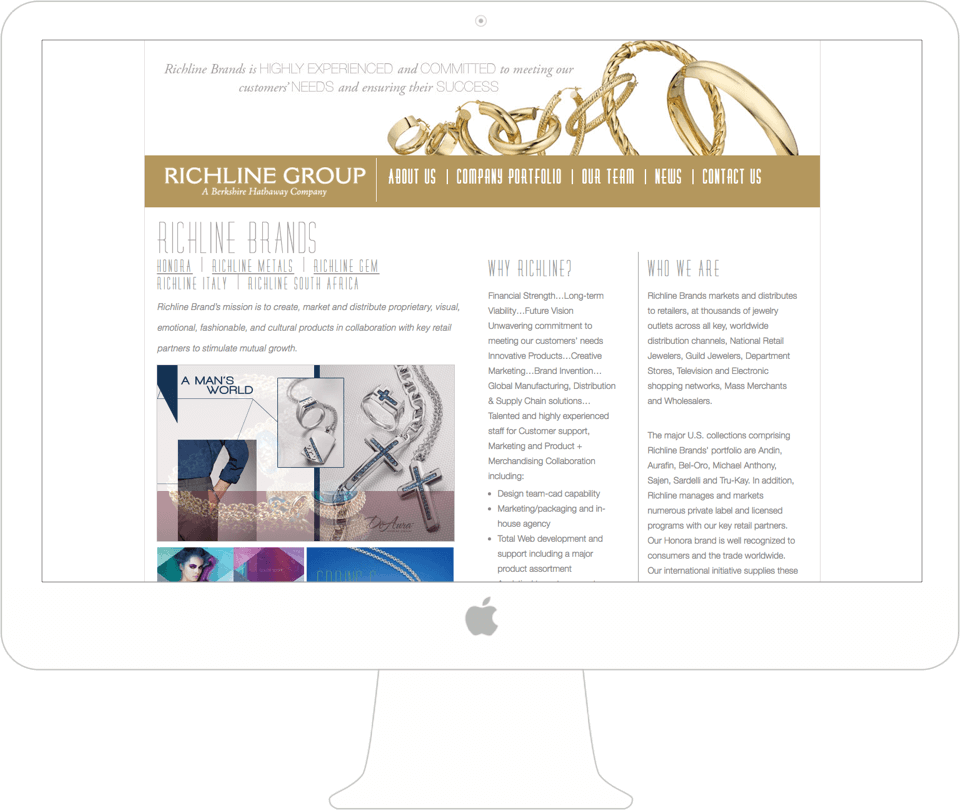
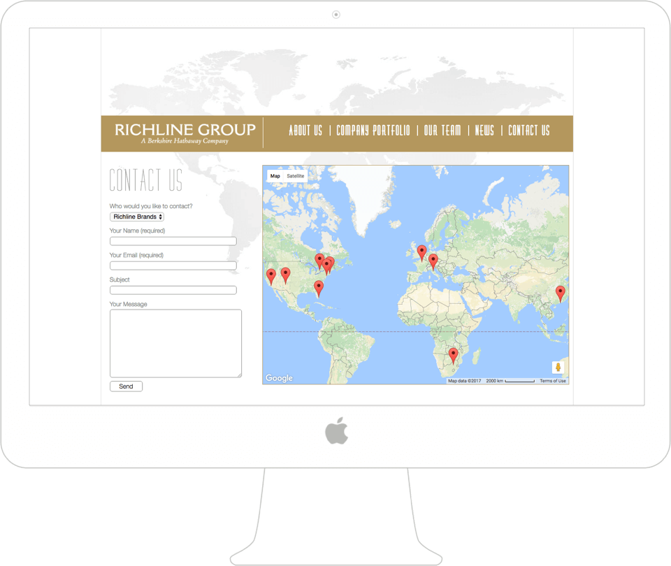

RICHLINE GROUP
Responsive Corporate Website
COMPANY BACKGROUND
Richline Group, Inc. is a wholly-owned subsidiary of Berkshire Hathaway Inc. since 2007, is the USA’s foremost, financially-strong jewelry manufacturer, distributor and marketer.
CHALLENGE
The main goal of the redesign was to present RG as an industry leader in a clear, visually appealing, effective way that would drive traffic to the website and lead to better conversion. The overall look and feel of the new site needed to look more modern and visual, less text heavy and easier to navigate. Redesigning the main company website of the Richline Group - a Berkshire Hathaway company - was a challenging and most rewarding experience.


RESEARCH
Before the initial project kick-off meeting with the client we conducted thorough research of the company’s history and background, implemented careful competitor research and analysis, user research and most importantly carefully analysed the current state of the Richline Group’s company website. Having made detailed notes on the results of our research we felt we were ready to meet with the stakeholders.
INITIAL MEETING
The next step was a meeting with the client’s marketing, design and digital teams. We needed to align on the project needs from the point of view of different perspectives and tried to gather in the conference room as many stakeholders as possible. In our experience, having all the important parties involved from the very beginning and being clear on all the project objectives saves time, effort and our clients’ money in the long run. During the meeting we asked a lot of questions, gathered all the necessary information on the project and shared our insights based on our previously conducted research.
BUSINESS OBJECTIVES
After having a successful initial meeting with the client we analysed all the information we had at hand and narrowed it down to the following business objectives:
- give a clear overview of what RG is and does;
- present RG and a highly reputable company and an industry leader;
- attract new clients and partners;
- encourage old clients and partners to do more business with RG;
- drive traffic to the RG website;
- encourage users to explore the website more;
- encourage users to contact the company.
USER OBJECTIVES
After we came up and agreed on the business goals of the project, we needed to make sure we align these goals with the user objectives. First and foremost, we narrowed down the demographics of the Richline Group website. Based on our discussions with the client and our own research the website would be mainly visited by other jewelry companies, vendors, industry press, possible tech partners and visitors of the Richline Group’s other websites. We conducted several user interview sessions in order to gather feedback from the different groups of potential users of the Richline Group site. Taking into account the needs of these groups we came up with the following user objectives of the site:
- make it effortless for the user to learn what RG is and does at first glance;
- make it easy for the user to find what they are looking for in as little time and effort as possible;
- make the experience of using the website intuitive, enjoyable, engaging and stress-/frustration-/effort-free;
- make the website more visually appealing and less text-heavy.
OTHER OBJECTIVES
Among other project objectives we marked:
- enhance the visual representation of the website;
- make the website design less stagnate, more diverse and engaging;
- find a good balance between text and imagery;
- make the website structure more flexible and scalable;
- design most of the pages as templates and sections as modules for easier, more efficient maintainability;
- make the design responsive and viewable on different devices.
CURRENT WEBSITE WEAKNESSES
Careful analysis and the results of user interviews proves that the current website failed to accomplish the main goal of the website - to present Richline Group as an industry leader in an effective, clear, visually appealing way. The site appears to be too text-heavy and the main message gets lost.
The lack of an effective home page results in a fact that users don’t get any sense of what Richline Group is and does at first glance.

The site doesn’t successfully educate the user about the company. There is also a risk that users won’t be inclined to read anything as the information about the company is presented in an overwhelming way. The overall design is not user-friendly and not responsive. It feels stagnate and monotonous. There seems to be lacking visual elements. In addition, the site’s structure in not easily scalable and needs a clear, straightforward, easy to use navigation.



NEW SITE POTENTIAL STRENGTHS
- clear and intuitive structure;
- clear, engaging and intuitive user experience;
- effective, clear and visually appealing home page;
- effective “About Us” section;
- less text-heavy;
- enhanced visual representation of the site;
- balance between text and visuals;
- clear and easy to use navigation;
- coheseve design from page to page, section to section;
- encouraging to learn more, explore further, contact the company;
- responsive;
- easily maintainable and flexible structure.
OUR PROCESS
Due to the complexity of the website structure, it appeared highly important to establish a clear site map of the website. To achieve that, we worked closely with the marketing and digital teams and came up with the following site map of the website.

We also collaborated with theRichline Group’s visual design team that provided us with some ideas and a basic brand guide that outlined the desired overall visual directions, fonts, colors and graphic elements.


After several meetings with the client, a lot of research and extensive analysis, we felt like we could start thinking of the experience of the new site and started off with some low-fidelity sketches.


Another detailed team discussion followed which helped up to make the necessary edits and go on to wireframing the pages of the website. We went through a few rounds of wireframes to make sure that the experience made sense both for the client and for potential user. User interviews were conducted at this stage too and the feedback was used to improve the wireframes.


NAVIGATION DESIGN
Due to the complexity of the large corporate site, the navigation design - making sure it is simple, intuitive and user-friedly - needed extra careful attention on our part. After we worked out what the site’s structure would look like, we started researching, ideating and testing out different design directions for the navigation concepts. We came up with some initial sketches and wireframes.


After more discussions with the client, our research and analysis we narrowed the ideas down and chose to work further on the navigation design direction we found the most efficient and user friendly. We came up with some wireframes that we showed to the client and tested with potential users.


The navigation concept we chose to work on seemed the most suitable for the multilevel structure of the website. Without overwhelming the user it gave easy access to any supporting page of the site the user may want to visit. Pages were easy to find and it was easy to go back to where the user started without getting frustrated, annoyed or confused. After we made sure that our design team, the test users and the client were all happy with the concept, the wireframes and the interactive prototype that we created for easier testing, we went on to implementing the actual design of the navigation.


The navigation concept was also carefully translated into mobile. We made sure it felt just as intutitive and straightforward as the desktop version.


OUR SOLUTION
Richline Jewelry's current website underwent a major redesign including major information architecture, user experience and visual design changes. The website is very information heavy so it was decided to break up the large amounts of text into smaller, easily digestible chunks. The use of numerous close up product shots and people photography adds a creative aspect to the site to avoid making the large corporate website look dry and impersonal. The information is structured in a clear logical way. The site is clean, polished and presents Richline Group as a modern, up-to-date, trustworthy company that is a confident leader of the industry.


A lot of attention was paid to re-designing the Contact Us page. It was important for the Richline Group to make sure that clients and potential business partners had an easy way to contact any department of the company. The Career page was something that the old site didn’t have. So we designed it from scratch. It appeared extremely important to attract talent and give the Richline Group justice by presenting it as a prestigious, creative and desirable place to work.


The new website design is fully responsive and can be easily accessed from any device and viewed on all types of screens.